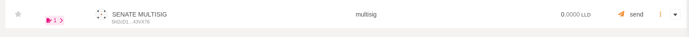
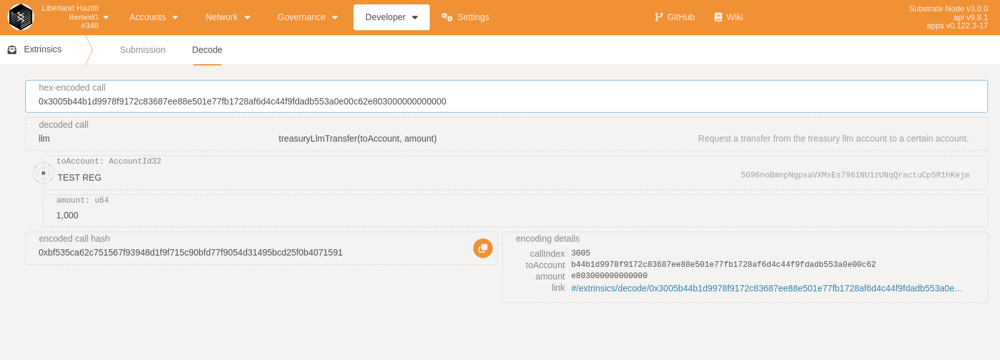

Senate guide
Pre requirements:
Read LLM documentation
Read How to create a multisignature wallet on liberland chain
Senate is the only entity that can send LLM from the treasury's account.
Multisig:
The senate consist of the 2/4 Multisig: "5DDRSE9Qh2aw8X1P6hEv2AZx61Wa3W7HTc3nk7bLjq93z1ga"
$ subkey inspect "0xdb93a8bc25102cb5c7392cbcc1b0837ece2c5f24436124522feb9bd6010bf780"
Secret Key URI `0xdb93a8bc25102cb5c7392cbcc1b0837ece2c5f24436124522feb9bd6010bf780` is account:
Secret seed: 0xdb93a8bc25102cb5c7392cbcc1b0837ece2c5f24436124522feb9bd6010bf780
Public key (hex): 0x32e229a871ecf6987d9fdaf5f64ca8f7c3e25667ef9cc1f9812aa4090182c560
Account ID: 0x32e229a871ecf6987d9fdaf5f64ca8f7c3e25667ef9cc1f9812aa4090182c560
Public key (SS58): 5DDRSE9Qh2aw8X1P6hEv2AZx61Wa3W7HTc3nk7bLjq93z1ga
SS58 Address: 5DDRSE9Qh2aw8X1P6hEv2AZx61Wa3W7HTc3nk7bLjq93z1ga
Members of the Multisig:
N: 5GEUDCyZrzPy1A6Kn288pHZFDtVhfYWvYmU1iTUPMg6YSVTE
M: 5FRhNgNVap5orCPvjoV1YbWGR3Zi5AsFUz6oEACf6fuvkinu
V: 5DwWxf1NzMpp4D3jv1KY176DwYRRkKDguprmMw4BjieCX2ZK
dev: 5CCi1rPi7cphC6iE9mWkYvbLf57b9N233nFG8hM5zjvYZpLi
NOTE: IF YOUR ADDRESS IS NOT LISTED HERE OR NOT PART OF THE SENATE MULTISIG, YOU CAN NOT USE THIS FUNCTIONALITY
Check Multisig manually by going to polkadot.js > accounts > + Multisig and adding the addresses above.
2 out of 4 signers must approve each transaction.
Make a treasury transfer with senate
Head over to Polkadot.js > Developer > extrinsics > LLM > treasuryLLMtransfer

Use the Multisig account as the source and select the reciever(the reciever can be any account on the chain)
Press submit transaction and copy the "multisig call data" and the "call hash" before you press "Sign and submit" Copy the call multisig call data and end it to the other signers
Once your transaction has been created from the senate wallet, you can see the transactions as waiting in the "Accounts" tab. 
Verify the call data:
Head over to Developer > extrensic > decode and check each call data:

Once the transaction is approved, you can head over to polkadot.js > developer > chain state > llm > LLMbalance and check the balance of the reciever